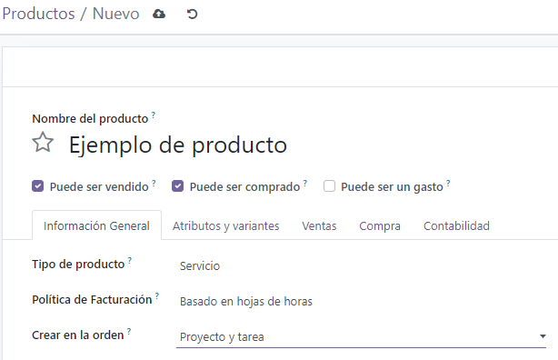
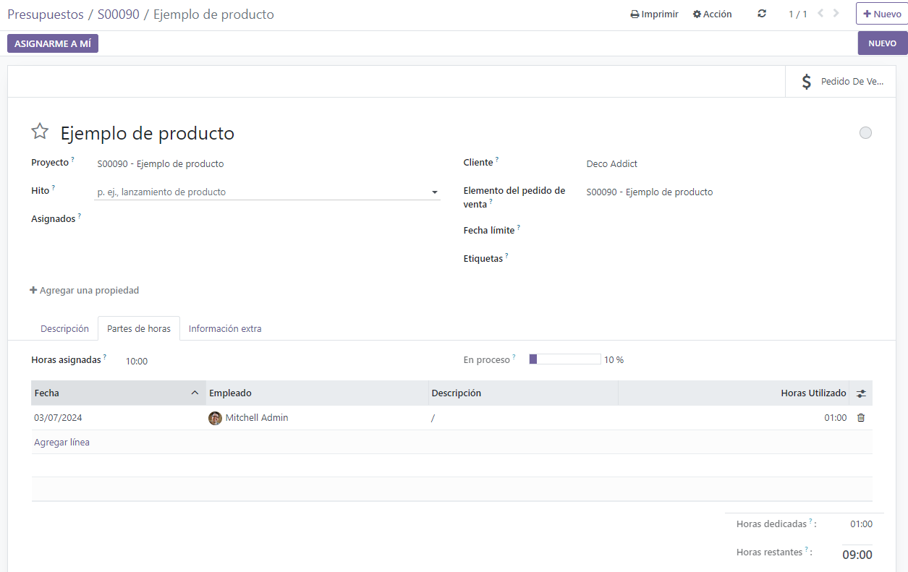
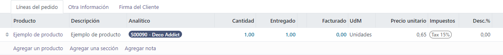
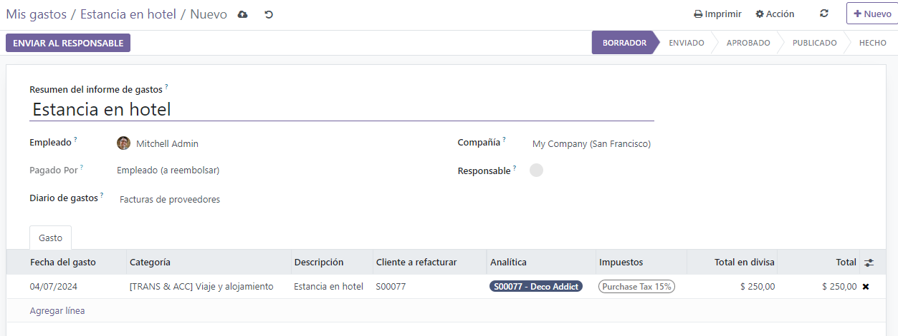
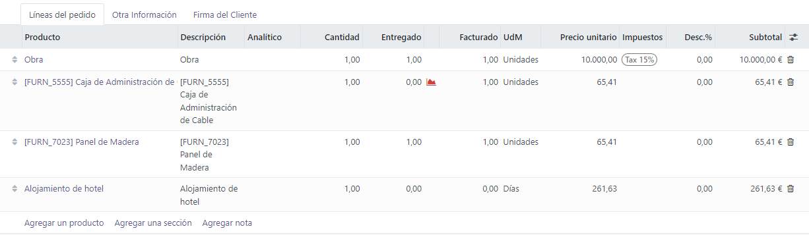
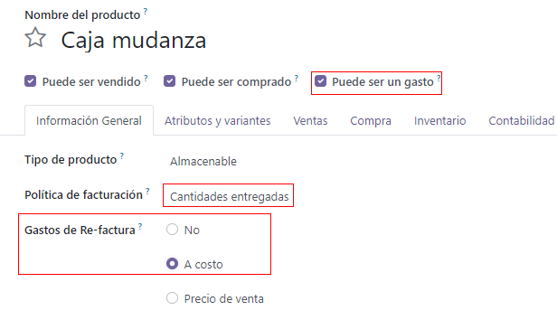
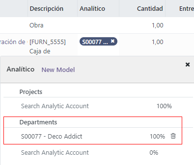
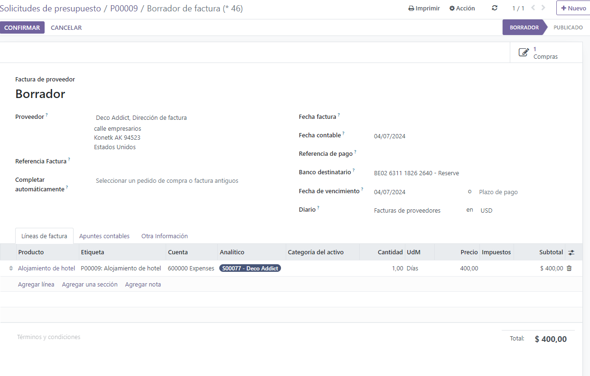
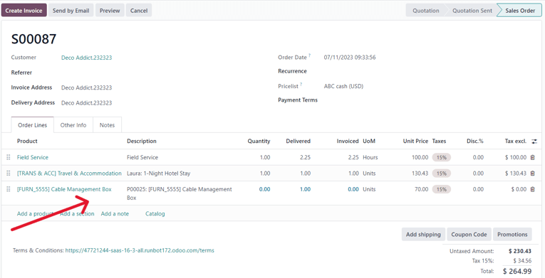
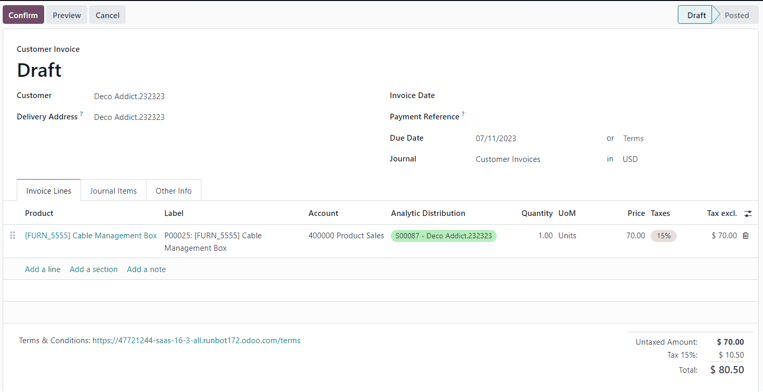

Invoicing based on time and materials¶
Invoicing based on time and/or materials is typically used when accurately estimating the size of a project isn’t possible, or when the requirements of a project may change.
This is different from a fixed-price contract, when a customer agrees to pay a specified total for the fulfillment of the contract—no matter what needs to be paid to the employees, sub-contractors, vendors, suppliers, and so on.
The Odoo Sales app can invoice for time and various other expenses (e.g. transport, lodging), as well as purchases needed to fulfill an order.
App and settings configuration¶
First, in order to accurately keep track of the progress of a project, the Odoo Project and Accounting apps must be installed.
To install the Project app, navigate to . Then, on the Apps page, locate the Project app block, and click Activate. The page automatically refreshes and returns to the main Odoo dashboard, where the Project app is now available to access.
Repeat the same process to install the Accounting application.
After installation, click the Accounting app icon from the main Odoo dashboard, and navigate to . On the Settings page, scroll down to the Analytics section, and ensure the box next to Analytic Accounting is checked.

Then, click Save to save all changes.
Then, navigate to . On the Settings page, in the Time Management section, ensure the box beside the Timesheets feature is checked.
Then, click Save to save all changes.
Service product configuration¶
With the Timesheets feature activated in the Project app, it is now possible to invoice for time spent on a project, but only when the following product configurations have been made.
Important
Invoicing for time spent on a project is only possible with products that have Service set as the Product Type on their product form.
To configure a service product, first navigate to . On the Products page, select the desired service product to be configured, or click New to create a new product.
From the product form, in the General Information tab, set the Product Type to Service. Then, open the drop-down menu in the Invoicing Policy field, and select Based on Timesheets.
Next, from the Create on Order drop-down menu, select Project & Task. That setting indicates that, when a sales order is created with this specific service product, a new project and task is created in the Project app.
Note
The option Task can be chosen instead from the Create on Order drop-down menu. If Task is chosen, select an existing project that the task will appear in from Project field, which only appears if Task is chosen in the Create on Order field.
Add time spent to sales order¶
After properly configuring a service product with the correct Invoicing Policy and Create on Order options, it is possible to add time spent to a sales order.
To see that in action, navigate to to open a blank quotation form. Then, proceed to add a Customer, and in the Order Lines tab, click Add a product, and select the properly configured service product from the drop-down menu.
Next, click Confirm to confirm the order.
After confirming the sales order, two smart buttons appear at the top of the order form: Projects and Tasks.
If the Projects smart button is clicked, it reveals the specific project related to this sales order. If the Tasks smart button is clicked, it reveals the specific project task related to this sales order. Both are also accessible in the Project app.
In order to add time spent on a sales order, click the Tasks smart button.
On the task form, select the Timesheets tab. From the Timesheets tab, employees can be assigned to work on the project, and the time they spend working on the task can be added by the employees or by the person who created the sales order.
To add an employee, and the time spent working on the task, click Add a line in the Timesheets tab. Then, select the appropriate Date and Employee. There is also the option to add a brief description of the work done during this time in the Description column, but it’s not required.
Lastly, enter the amount of time worked on the task in the Hours Spent column, and click away to complete that line in the Timesheets tab.
Note
The time entered in the Hours Spent column is immediately reflected in the Allocated Time field (located near the top of the task form) as a percentage, which reflects how much of the total allocated work hours have been done so far.
That same information is found as numerical hours in the Hours Spent and Remaining Hours fields, located at the bottom of the Timesheets tab.
Repeat this process for however many employees and hours have been worked on the project.
Invoice time spent¶
Once all the necessary employees and time spent have been added to the project task, return to the sales order to invoice the customer for those hours. To do that, either click the Sales Order smart button at the top of the task form, or return to the sales order via the breadcrumb links, located in the upper-left of the screen.
Back on the sales order form, the time that was added to the task is reflected in the Order Lines tab (in the Delivered column) and in the new Recorded Hours smart button at the top of the sales order.
To invoice the customer for time spent on the project, click Create Invoice, and select Regular invoice from the Create invoices pop-up window. Then, click Create Draft Invoice.
Doing so reveals a Customer Invoice Draft, clearly showing all the work that’s been done in the Invoice Lines tab.
Tip
Pay attention to the Analytic Distribution column in the Customer Invoice, as that information is necessary to ensure other time/material invoicing tasks are completed properly and accurately.
Click Confirm to confirm the invoice and continue with the invoicing process.
Expenses configuration¶
In order to track and invoice expenses related to a sales order, the Odoo Expenses app must be installed.
To install the Expenses app, navigate to . Then, on the Apps page, locate the Expenses app block, and click Activate.
The page automatically refreshes and returns to the main Odoo dashboard, where the Expenses app is now available to access.
Add expenses to sales order¶
To add an expense to a sales order, first navigate to the app. Then, from the main Expenses dashboard, click New, which reveals a blank expense form.
On the expense form, add a Description of the expense (e.g. Hotel Stay, Plane
Ticket). Next, in the Category field, select the appropriate option from the drop-down
menu (e.g. Meals, Miles, Travel & Accommodation).
Note
Expense categories can be added and modified by navigating to .
Then, enter the total amount of the expense in the Total field, as well as any Included Taxes that may apply. Next, ensure that the correct Employee is selected, and designate who paid for the expense in the Paid By field: the Employee (to reimburse) or the Company.
Next, in the Customer to Reinvoice field, select the appropriate sales order from the drop-down menu. Then, select that same sales order information from the Analytic Distribution field, as well.
Note
The Analytic Distribution field will only have the corresponding sales order as an option if the sales order contains a service product that is billed based on Timesheets, Milestones, or Delivered Quantities.
If there are any receipts that should be uploaded and attached to the expense, click the Attach Receipt button, and upload the necessary documents to the expense. This is not required, but it may affect whether or not an expense is approved.
When all the information has been entered, click Create Report to create an expense report detailing all the expense information that was just entered.
Then, there’s the option to Submit to Manager for approval. Once approved, the Report in Next Payslip appears.
To showcase a complete flow in this example, select Submit to Manager. Then, the manager would click Approve to approve this expense, and click Post Journal Entries to post this expense to the accounting journal.
Invoice expenses¶
To invoice a customer for an expense on a sales order, navigate to the related sales order, either from the app or from the expense report in the app. From the expense report, click the Sales Orders smart button at the top of the page.
If the expense report was linked to the sales order, the newly-configured expense now has its own line in the Order Lines tab, and can be invoiced to the customer.
To invoice the customer for the expense on the sales order, click Create Invoice, select Regular Invoice from the Create invoices pop-up window, then click Create Draft Invoice.
Doing so reveals a Customer Invoice Draft for the expense. Then, the invoicing process can be completed as usual.
.png)
Purchase configuration¶
In order to invoice a customer for purchases made on a sales order, the Purchase application must be installed.
To install the Purchase application, navigate to . Then, on the Apps page, locate the Purchase app block, and click Activate. The page automatically refreshes and returns to the main Odoo dashboard, where the Purchase app is now available to access.
Add purchase to sales order¶
To add a purchase to a sales order, a purchase order must first be created. To create a purchase order, navigate to to reveal a blank purchase order form.
First, add a Vendor to the purchase order. Then, under the Products tab, click the extra column options drop-down menu, represented by two horizontal lines with dots on them, located to the far-right of the column headers. From that drop-down menu, select Analytic Distribution.

After adding the Analytic Distribution column to the headers on the Products tab of the purchase order form, proceed to add the product(s) to the purchase order. To do that, click Add a product, and select the desired product from the drop-down menu. Repeat for all the products to add.
Important
In order for a purchase to be properly invoiced on a sales order, the product on the purchase order must be marked as Can be Expensed, have an Invoicing Policy set to Delivered quantities, and have the At cost option selected in the Re-Invoice Expenses field on its product form.
Then, select the appropriate Analytic Distribution associated with the sales order to which this purchase order is related. To do that, click the empty Analytic Distribution field to reveal an Analytic pop-up window.
Then, from the Departments drop-down menu, select the analytic distribution associated with the desired sales order to be invoiced for the purchase.
Once all the information is entered in the Products tab of the purchase order, confirm the order by clicking Confirm Order. Then, click Receive Products when the products have been received. This creates a receipt form.
Note
If any serial/lot numbers must be entered before validating the receipt of products, then on the receipt form, click the details icon represented by four horizontal lines located to the far-right of the product line.
This reveals a Detailed Operations tab, in which the necessary Lot/Serial Number(s) and Done quantity can be added. When ready, click Confirm to confirm the data.
Then, click Validate to validate the purchase order.
Next, return to the purchase order, via the breadcrumb links at the top of the page, and click Create Bill to create a vendor bill that can be invoiced to the customer on the attached sales order.
Note
Make sure to enter a Bill Date on the Vendor Bill Draft before confirming. If a Bill Date is not entered, an error window appears, requesting that information to be entered before confirmation can occur.
Then, click Confirm to confirm the vendor bill, which is then automatically added to the sales order, where it can be invoiced directly to the customer attached to it.
Invoice purchase¶
To invoice a customer for a purchase on a sales order, first add the purchase to the sales order, then navigate to the desired sales order in the app.
On the sales order that was attached to the purchase order, the purchased product now has its own product line under the Order Lines tab, and it is ready to be invoiced.
To invoice the customer for the purchase, simply click Create Invoice, select Regular Invoice from the Create invoices pop-up window, then click Create Draft Invoice.
Doing so reveals a Customer Invoice Draft with the newly-added purchase order product in the Invoice Lines tab.
To complete the invoicing process, click Confirm to confirm the invoice, and then click Register Payment in the Register Payment pop-up form.